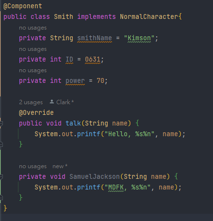
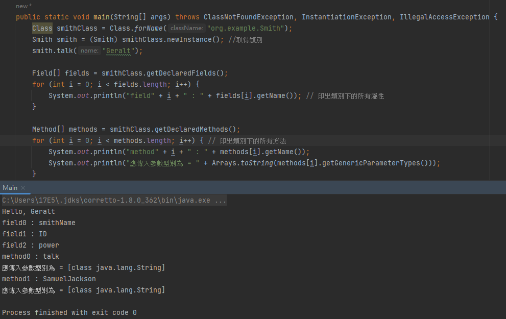

嗨，我是剛出社會不久的程式小白Clark，最近在開發上面偶然接觸到了Java Reflection的相關知識， 為了不讓自己健忘，所以我建立了一個Github Page，來存放我至今以後的技術教學文章。 那麼，正題開始。
先來回顧一下Java是怎麼運作的吧。一般來說Java編譯程式碼時會經歷三個階段。

反射是一種JAVA 提供的機制，允許執行時期動態載入類別、檢視類別資訊、生成物件或操作生成的物件。
甚麼叫執行時間動態載入類別呢？執行時間就是指程式在執行的時間，通常來說，程式的開發都是在執行時間以前就確定開發所需要引用的類別
但反射的概念卻恰好相反，他是在程式執行中，才去訪問需要被使用的類別，在複雜的專案中，這樣的作法可能會導致某種不可預料的錯誤。
Java Reflection API提供的功能如下：
假設我有一個類別如下：

當中有三個private的屬性與一個private的方法與public的方法。接著，我撰寫了以下程式：
Class smithClass = Class.forName("org.example.Smith");
接著，印出的結果如下：

Smith smith = (Smith) smithClass.newInstance(); //取得類別
smith.talk("Geralt");
Field[] fields = smithClass.getDeclaredFields();
for (int i = 0; i < fields.length; i++) {
System.out.println("field" + i + " : " + fields[i].getName()); // 印出類別下的所有屬性
}
Method[] methods = smithClass.getDeclaredMethods();
for (int i = 0; i < methods.length; i++) { // 印出類別下的所有方法
System.out.println("method" + i + " : " + methods[i].getName());
System.out.println("應傳入參數型別為 = " + Arrays.toString(methods[i].getGenericParameterTypes()));
}
這段程式是這樣的。我首先使用getName()方法取得名為Smith的類別，印出Smith預設的talk()方法確保功能正常運作，再來，我透過Reflection的API取得該類別下的所有變數與所有的方法，
令人訝異的是，就連private方法也被一併印出，這代表了Reflection功能真的十分強大。